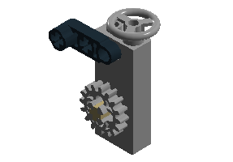

public void start(Stage stage) {
Circle circle = new Circle(100, Color.ORANGE);
Button button = new Button("Click Me");
Pane layoutContainer = new StackPane(circle, button);
Scene scene = new Scene(layoutContainer);
stage.setScene(scene);
stage.setWidth(WIDTH);
stage.setHeight(HEIGHT);
stage.setTitle("JavaFX Hello World");
stage.show();
}UX Design und UI Engineering – Technische Umsetzungsstrategien von Custom User Interface Elements
Advanced Experience Design · FHNW
Rahel Lüthy
3. Oktober 2016
Hausaufgabe
Lernziele
Spektrum von Custom UI Elementen
Herausforderungen
Umsetzungsstrategien / Lösungskonzepte
Ablauf
Auffrischung JavaFX
Diskussion & Code
Hausaufgabe
Fragen jederzeit
Präsentation & Code werden zur Verfügung gestellt
Rahel Lüthy
MSc Biologie, Uni Basel
20 Jahre Software Entwicklung (Java, Scala)
Biomedizinische Informatik, HLS (FHNW Muttenz)
Ablauf
Auffrischung JavaFX
Diskussion & Code
Hausaufgabe
JavaFX Hello World
JavaFX Hello World
Scene Graph
JavaFX Klassenhierarchie
JavaFX Klassenhierarchie
Ablauf
Auffrischung JavaFX
Diskussion & Code
Hausaufgabe
Custom UI Elemente
Was kann an einem UI Element "custom" sein?

Custom auf welchem Level?
Erscheinung
Zusammensetzung
Interaktivität
Wie mit JavaFX umsetzen?
Erscheinung ("Styling") CSS
Zusammensetzung ("Composition") Scene Graph
Interaktivität Properties, Listeners, Bindings
Eine Custom Komponente
Wie mit JavaFX umsetzen?
Gibt es diese Komponente schon?
So einfach wie möglich
CustomComponent.java:
public class CustomComponent extends Region {
public CustomComponent() {
getStyleClass().setAll("custom-component");
}
@Override
public String getUserAgentStylesheet() {
return CustomComponent.class.getResource("custom-component.css").toExternalForm();
}
}custom-component.css:
.custom-component {
-fx-shape: "M20.388,10.918L32,12.118l-8.735,7.749L25.914,31.4l-9.893-6.088L6.127,31.4l2.695-11.533L0,12.118 l11.547-1.2L16.026,0.6L20.388,10.918z";
-fx-background-color: gold;
}Wiederverwendbarkeit
.custom-component {
-fx-shape: "M318.2,259.5c-7.5,0-14.2,3.7-18.2,9.5c-4-5.7-10.7-9.5-18.2-9.5 c-12.3,0-22.3,10-22.3,22.3c0,30.4,31.6,58.7,40.5,58.7s40.5-28.4,40.5-58.7C340.5,269.5,330.5,259.5,318.2,259.5z";
-fx-background-color: #E2264D;
}Spider
Spider: Umsetzungsstrategien
Styling CSS oder programmatisch
Composition Circle, Line, Group
Interaktivität setOnMouseMoved
SimpleIntegerProperty
bind
xPlan
Aktuelles HLS Forschungsprojekt
Inselspital Bern
Unispital Basel
Patientenströme in JavaFX 3D
Ablauf
Auffrischung JavaFX
Diskussion & Code
Hausaufgabe
Hausaufgabe
RatingApp
ToggleComponent
RatingComponent TODO
Lernziel 1
Spektrum von Custom UI Elements
Styling
Zusammensetzung
Interaktivität
Lernziel 2
Herausforderungen
Standardbibliothek kennen
Viele Wege führen nach Rom
So einfach wie möglich
Lernziel 3
Umsetzungsstrategien / Lösungskonzepte
CSS
Composition & Inheritance
Properties, Listeners, Bindings
Code & Präsentation
Addendum: JavaFX Animations
Addendum: JavaFX Animations
Addendum: xPlan Spring Force Layout